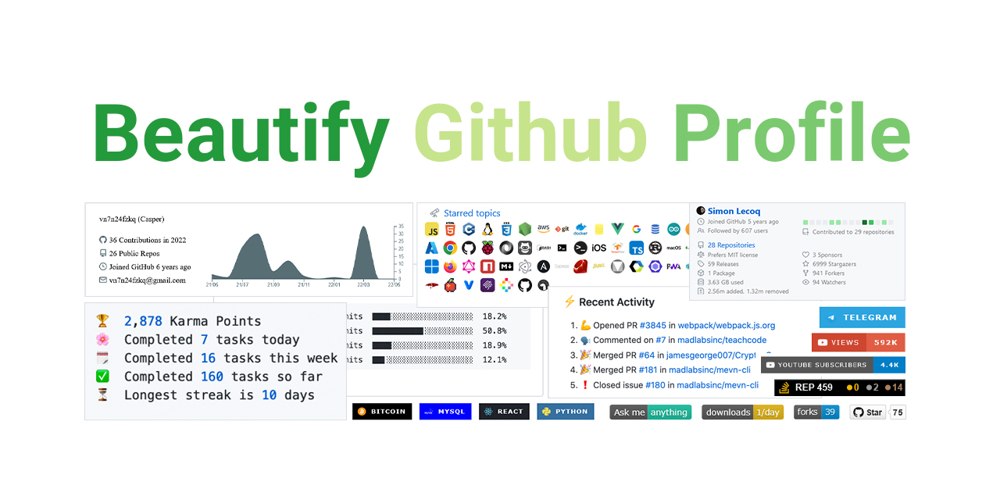
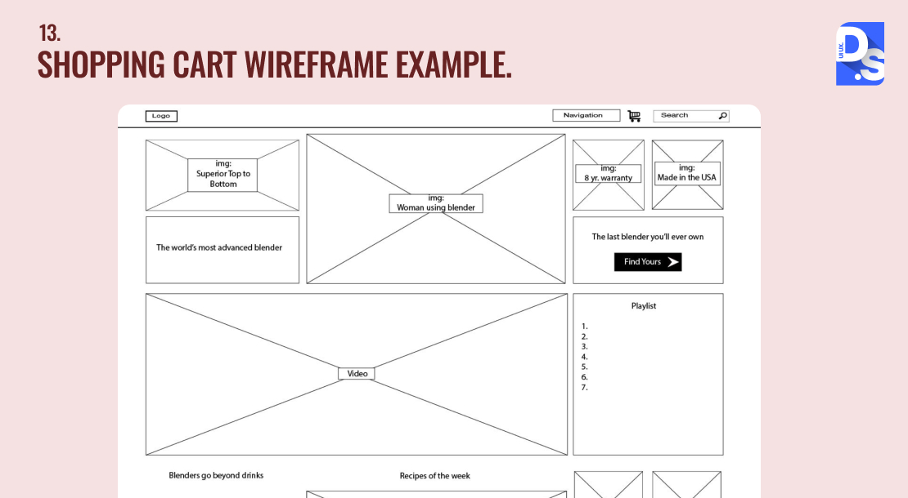
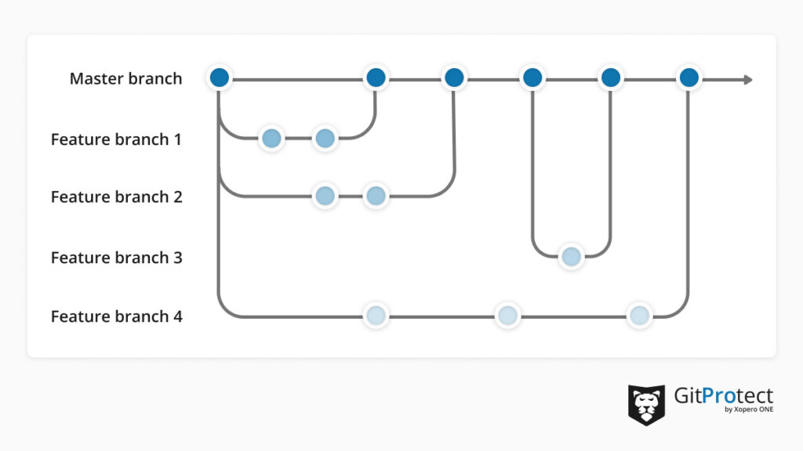

What is the purpose of a README file?
A README file is the front page of a repository. It introduces the project, explains how to install or run the code, and guides other developers on how to contribute.
Read more about READMEs
A README file is the front page of a repository. It introduces the project, explains how to install or run the code, and guides other developers on how to contribute.
Read more about READMEs
A wireframe acts as a blueprint for a user interface. It defines the structural layout, content hierarchy, and functionality of a page before any visual design or code is added.
Read more about Wireframes
A branch is an independent line of development in Git. It allows you to work on new features or fixes safely without affecting the stable 'main' codebase until it is fully tested.
Read more about Git Branches